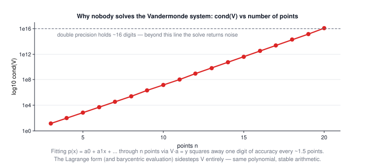

Lecture 3: Interpolation
CSE 276C, Lecture 3 · Prof. Henrik Christensen · Numerical Recipes ch. 3, Math for ML ch. 9. All numbers verified in
scripts/lec3/verify.py. This is the theory behind
HW2.The big picture
Lecture 2 solved for exact unknowns; this lecture builds functions from samples — and every method here is secretly a Lecture-2 linear solve (Vandermonde, tridiagonal, normal equations). It's also exactly the toolbox HW2 grades you on.
| robotics problem | what you have | what you need | method |
|---|---|---|---|
| trajectory upsampling (HW2!) | waypoints at 1 Hz | poses at 30 Hz | linear / spline on x(t), y(t) |
| reading a sensor between pixels | a grid of values | value at any (x, y) | bilinear |
| battery / terrain / signal maps | sparse noisy measurements | a map with uncertainty | kriging (GP) |
| smooth joint trajectories | via-points | a curve with bounded curvature | cubic splines |
1 · Model-based vs data-driven
Two regimes (slides): model-based — domain knowledge supplies the function family (battery recharge curves, drive-train dynamics, grasp material models); data-driven — all you have is samples and maybe constraints (driving in traffic, painting). This lecture is the data-driven toolkit. The theoretical safety net is the Weierstrass approximation theorem: every continuous f on [a, b] can be approximated arbitrarily well by some polynomial. Wonderful — except it names no strategy for finding it, and the obvious strategy goes wrong (Section 3).
2 · Linear interpolation: the baseline
$$p(x) = f(x_i) + \frac{f(x_{i+1}) - f(x_i)}{x_{i+1} - x_i}\,(x - x_i), \qquad x \in [x_i, x_{i+1}]$$Equivalently \(y = Ay_j + By_{j+1}\) with \(A = \frac{x_{j+1}-x}{x_{j+1}-x_j}\), \(B = 1-A\) — weights that fade linearly from one neighbor to the other (a 2-point special case of Lagrange). Continuous, local, monotone, cheap; kinked at every sample, and it cuts every corner (HW2 measures exactly how much).
3 · Lagrange: one polynomial through everything
n+1 points determine a unique degree-n polynomial. The direct route — solve \(V a = y\) for coefficients of \(a_0 + a_1x + \dots\) — builds the Vandermonde matrix, and it is numerically rotten:

Lagrange's form writes the same polynomial without ever solving a system:
$$p(x) = \sum_{k=0}^n y_k L_k(x), \qquad L_k(x) = \prod_{i \ne k} \frac{x - x_i}{x_k - x_i}, \qquad L_k(x_i) = \delta_{ik}$$| symbol | meaning |
|---|---|
| \(L_k\) | a "switch" polynomial: 1 at its own point, 0 at every other |
| \(y_k L_k\) | each data point contributes itself, switched on only near home |
Worked example: the slides' (x−1)² recovery (click to close)
Points (0, 1), (1, 0): p(x) = 1·L₀ = \(\frac{x-1}{0-1}\) = −x + 1 — a line, exact at both points. Add (−1, 4): now L₀ = −(x−1)(x+1), L₁ = "don't care" (its y is 0), L₂ = ½x(x−1), and
$$p(x) = -(x-1)(x+1) + 4\cdot\tfrac12 x(x-1) = (x-1)(-x-1+2x) = (x-1)^2 \;✓$$Three samples of a parabola reproduce the parabola exactly — interpolation is exact when the truth is in the family. Verified.
🕹️ Try it: add points and watch the red polynomial start to swing while the green spline stays calm. "Load Runge example" is the classic failure.
4 · Cubic splines: stitched, not stretched
Why cubics? Demand the 4th derivative be zero on each piece and you get the lowest-degree polynomial that can still match value and curvature at both ends: \(f = \frac{c_1}{6}x^3 + \frac{c_2}{2}x^2 + c_3x + c_4\) per interval. Numerical Recipes' form extends linear interpolation with a curvature correction:
$$y = Ay_j + By_{j+1} + Cy''_j + Dy''_{j+1}, \qquad C = \tfrac16(A^3 - A)h^2, \quad D = \tfrac16(B^3 - B)h^2$$The \(y''_j\) are chosen so slopes match across every knot — a tridiagonal system (each knot only talks to its neighbors), solved in O(n). Verified against scipy to 10⁻¹⁶.
5 · Multi-variate: bilinear interpolation
On a grid (images, lidar heightmaps, cost maps), interpolate inside a cell from its 4 corners:
$$y(x_1, x_2) = (1-t)(1-u)\,y_0 + t(1-u)\,y_1 + tu\,y_2 + (1-t)u\,y_3$$with t, u the fractional positions in the cell. The weights are the areas of the opposite rectangles, they always sum to 1, and the formula is exact for planes (verified).
🕹️ Try it: drag the ★; each corner's weight is the area of the rectangle diagonally opposite it.
6 · Kriging: interpolation that knows its own uncertainty
Treat the data as samples of a stochastic process and estimate the most likely function — "Gaussian process regression" (the slides' spelling "Kringing" is a typo that stuck). Model f as a weighted sum of basis functions:
$$f(x) = \sum_i w_i\,\phi_i(x) = \vec w\,\Phi(\vec x) \qquad \phi_i:\; \text{polynomial } x^i \;\big/\; \text{Gaussian } e^{-(x-x_i)^2/2s} \;\big/\; \text{sigmoid}$$Maximum likelihood with Gaussian noise ⟹ least squares (Lecture 2 again):
$$w_{ML} = (\Phi^T\Phi)^{-1}\Phi^T\vec y \qquad\xrightarrow{\;\text{regularize}\;}\qquad w = (\lambda I + \Phi^T\Phi)^{-1}\Phi^T\vec y$$| knob | what it does |
|---|---|
| s (bump width) | how far each measurement's influence reaches — small s: wiggly and unsure between points |
| λ (regularization / noise) | how much to trust each point — λ > 0 stops exact interpolation and starts smoothing (verified: λ = 0.3 leaves 0.18 residuals at the data) |
| the variance band | the model's own confidence — tight at data, wide in gaps (the slides' California maps: prediction map + variance map) |
🕹️ Try it: add and drag measurements; shrink s to see uncertainty balloon between points; raise λ to watch the curve stop passing through the dots.
7 · Summary
- Interpolation = exact at samples; approximation = close everywhere (Lecture 4's subject). Weierstrass promises a good polynomial exists; it doesn't say the interpolating one is it.
- Never solve the Vandermonde system; use the Lagrange/barycentric form — and fear global polynomials on many points.
- Cubic splines: linear interpolation + curvature correction, tridiagonal O(n) solve, local and smooth — the default.
- Bilinear: 4 corners, opposite-area weights, exact for planes.
- Kriging/GP: ML fitting of basis functions; λ trades interpolation for smoothing; you get error bars for free.
| method | one-line idea | use it when |
|---|---|---|
| linear | chord between neighbors | dense data, baseline, hard real-time |
| Lagrange | one exact polynomial | few, well-placed points (≤ ~8) |
| cubic spline | stitched cubics, matched curvature | smooth trajectories, the default |
| bilinear | opposite-area corner weights | grids: images, heightmaps, lookup tables |
| kriging / GP | stochastic fit + uncertainty | sparse noisy data, exploration planning |
⚠️ Typos in the slides to watch out for
- Throughout: "Kringing" → Kriging (after D. G. Krige).
- Slide 11: in \(L_k(x) = \prod\) the condition reads "i = 0, i ≠ j" → i ≠ k; and "y_kL_k(x_k) = y_kL_k(x)" should read p(x_k) = y_k (the δ_ik line below it is the real statement).
- Slide 14: "L₁ = Don't care" is correct but only because a₁ = 0 — the slide's a-values are the y-values (a₀=1, a₁=0, a₂=4), a notation collision with the polynomial coefficients a_i from slide 9.
- Slide 32: regularized solution "(λ + ΦᵀΦ)⁻¹" → (λI + ΦᵀΦ)⁻¹.
- Slide 19: C and D carry (x_{j+1} − x_j)² — the h² of the current interval; easy to mis-code with non-uniform knots.